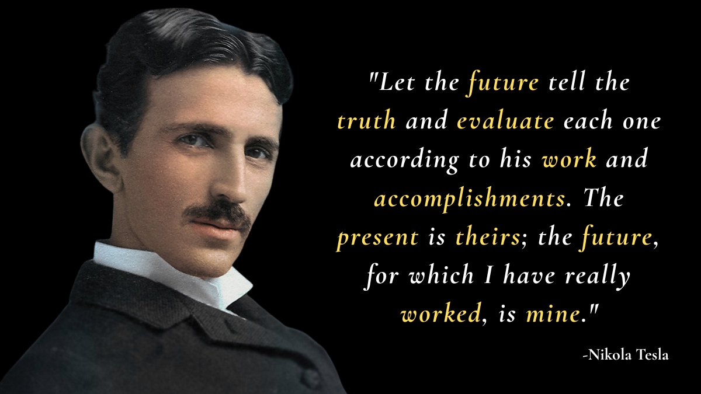

A Quote of the Day is a selected saying or phrase attributed to a prominent person, designed to inspire, motivate, and encourage positive action. Quotes help people reflect on their actions, attitudes, and goals, often providing clarity and strength during challenging times. The Quote of the Day is by Nikola Tesla.
Nikola Tesla was a visionary inventor and scientist whose words continue to inspire millions. He is known as the “Master of Lightning” due to his groundbreaking work in electricity and his profound insights into life and innovation.
Read further to know the Quote of the Day by Nikola Tesla and discover the wisdom behind his most inspiring words. Also, learn Quote of the Day meaning, Nikola Tesla’s biography, why he is famous, interesting facts about him and other inspirational Nikola Tesla quotes.
"Let the future tell the truth and evaluate each one according to his work and accomplishments. The present is theirs; the future, for which I have really worked, is mine." 
Quote of the Day meaning: This quote emphasizes the importance of focusing on long-term impact and legacy. Tesla believed that true value is measured by one’s contributions and achievements, not by immediate recognition. He encourages individuals to work with vision and purpose, knowing that their efforts will be judged by future generations. This quote inspires us to persevere, innovate, and trust in the lasting impact of our work.
Nikola Tesla (1856–1943) was a Serbian-American inventor, electrical engineer, mechanical engineer, and futurist best known for his contributions to the design of the modern alternating current (AC) electricity supply system. Tesla’s inventions and theories revolutionized the field of electrical engineering and laid the foundation for many modern technologies. He was a prolific inventor with over 300 patents to his name, including the Tesla coil and AC induction motor. Tesla is known as the “Master of Lightning” due to his groundbreaking work in electricity.